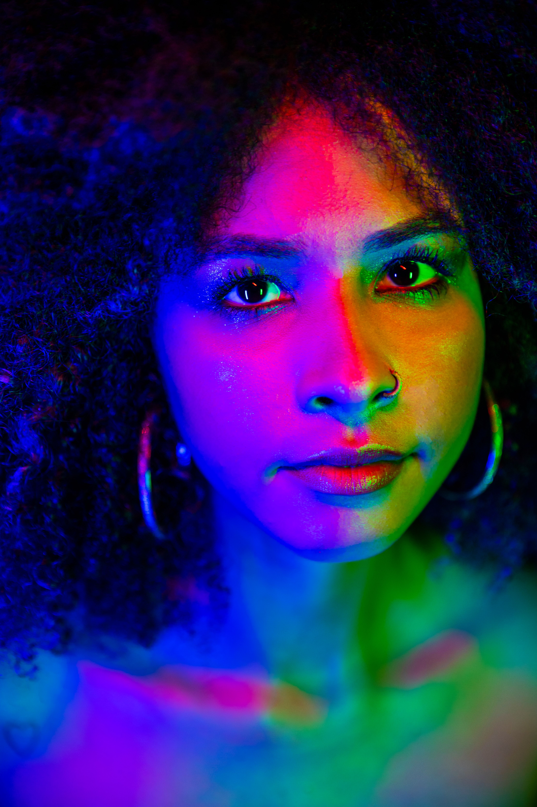
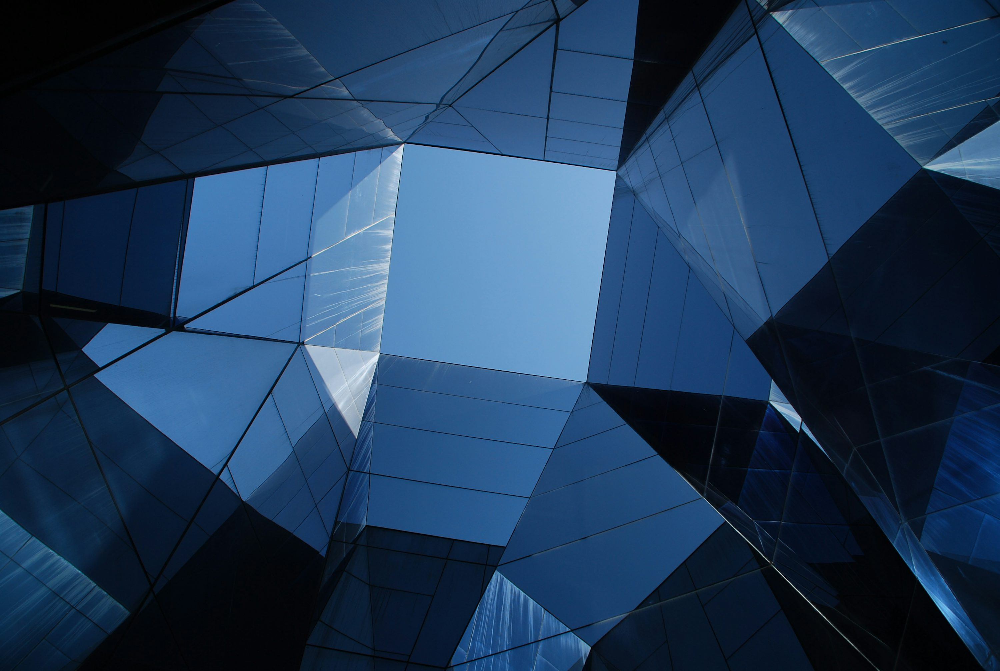
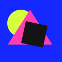
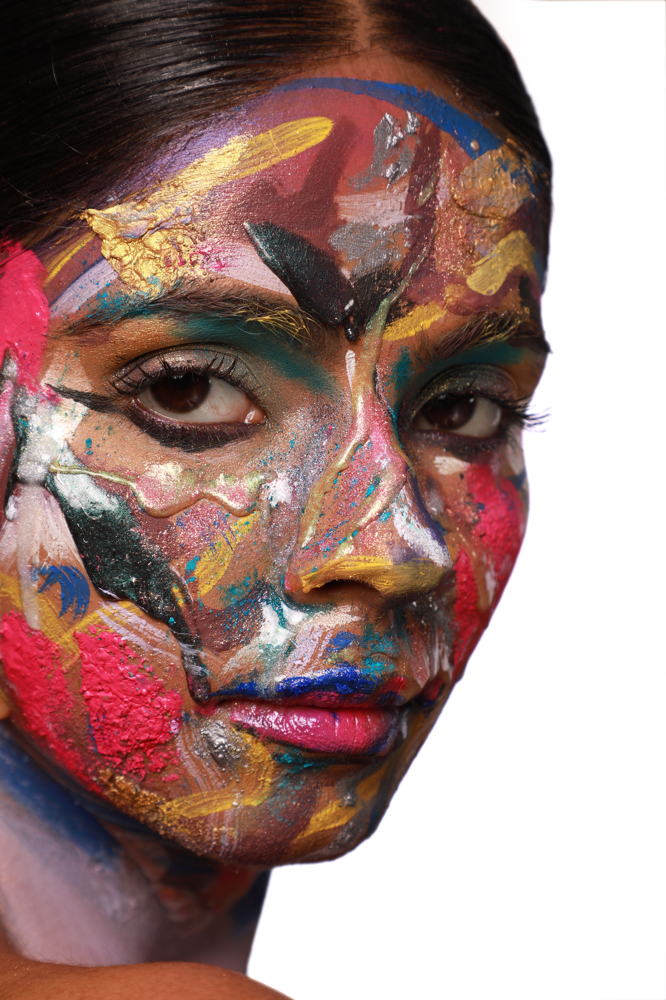
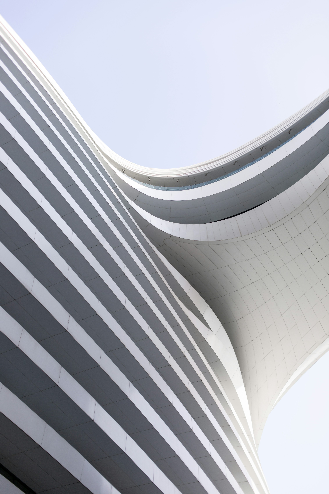
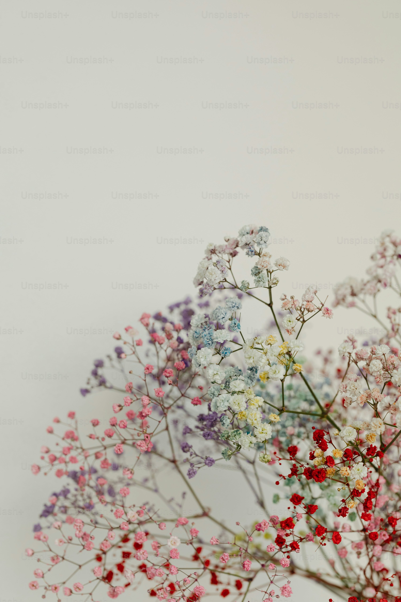
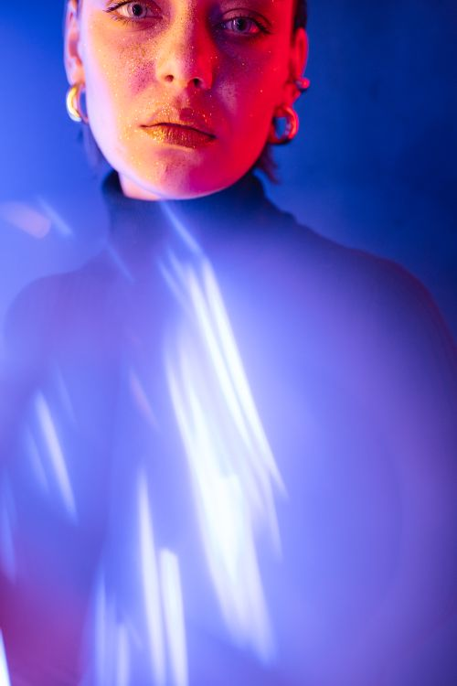

01AUTO
Crossfade
最も軽い不透明度だけのクロスフェード。

CSS TRANSITION & LAYER LABHTML + CSS ONLY
画像Aから画像Bへ切り替わる14種のトランジションと、レイヤーを分けて雲・霧・前景を別速度で動かす実演です。AUTO PLAY は初期状態でON。OFFにすると、カードやシーンをホバーして確認できます。
すべて画像Aと画像Bを重ね、CSSのtransform、opacity、clip-path、maskだけで切り替えています。


最も軽い不透明度だけのクロスフェード。
Aを左へ押し出し、Bを右から入れる。
Aを右へ押し出し、Bを左から入れる。

Bを寄った状態から等倍へ戻して切り替える。

中央の円からBを開くリビール。

斜めの境界線でBを出すワイプ。

中央から左右へ開く縦分割のリビール。
中央から上下へ開く横分割のリビール。
Y軸の90度回転で立体的に切り替える。
X軸でフリップするカード風の切り替え。
ぼかしを伴う溶解風の切り替え。
グラデーションマスクで境界を柔らかくする。
余韻を残す長めのクロスフェードとして使う。
広告・ポートフォリオ向けの強い視線移動。
こちらは画面全体を切り替えるのではなく、画像Aと画像Bが同じ画面で接するときの境界デザインです。コラージュ、セクション区切り、分割ヒーロー、編集ページの見開きに使えます。
もっとも安定する直線の境界。分割ヒーローの基準。
視線を左上から右下へ流す、シャープな斜め境界。
片側を大きな曲線で切り、柔らかい境界にする。
連続する波型。自然物・旅行・子ども向けに合う。
強いジグザグ境界。スポーツやストリート系に使いやすい。
不規則な裂け目をCSSの多点ポリゴンで作る。
マスクで二枚を重ね、境界をぼかして溶かす。
短いスリットを重ねて、デジタルな継ぎ目にする。
中央で張り出す切り込み。片側の主役を強調できる。
リボン状の境界に明るい帯を重ね、接続を目立たせる。
画像A/Bの地平線・人物の目線・主要被写体の高さを揃えると、異なる画像を接続しても不自然さが減ります。境界に複雑な形を使うほど、両側の被写体から10〜15%程度離して切るのが安全です。顔・建物の輪郭・商品ロゴを境界で切らないようにします。
直線／斜め／波／裂け目はclip-path: polygon()、柔らかく混ぜる場合はmask-image、立体感を足す場合は疑似要素のグラデーションを使います。複数枚の大きい画像を重ねるため、一覧表示では画像を最適化し、境界エフェクトは必要な箇所に限定します。
背景・遠景・中景・前景を分けて動かすと、静止画の上でも奥行きが生まれます。雲は遠いほどゆっくり、手前ほど速く動かします。
空・太陽・遠い雲・中景の雲・山・霧・前景を独立レイヤーにしています。遠い雲は29秒、近い雲は14秒で動かし、速度差だけでパララックスを作っています。
レイヤー素材を準備する際の設計と、CSS実装を軽く・破綻しにくくするための実用的なコツです。
<div class="scene">
<img class="layer layer--sky" src="sky.webp" alt="">
<img class="layer layer--cloud-far" src="cloud-far.webp" alt="">
<img class="layer layer--cloud-near" src="cloud-near.webp" alt="">
<img class="layer layer--mountain" src="mountain.webp" alt="">
<img class="layer layer--foreground" src="trees.webp" alt="">
</div>
.scene { position: relative; overflow: hidden; }
.layer { position: absolute; inset: 0; width: 100%; height: 100%; }
.layer--cloud-far { animation: drift 30s linear infinite; }
.layer--cloud-near { animation: drift 14s linear infinite; }
@keyframes drift {
from { transform: translate3d(-8%, 0, 0); }
to { transform: translate3d( 8%, 0, 0); }
}